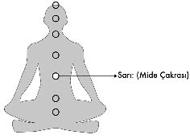

3- SARI – MİDE ÇAKRASI (HAZMETMEK):
Midenin bulunduğu alanda yer alan sarı mide çakrası sadece yediklerimizi hazmetmekle ilgili değil aynı zamanda yaşadığımız olayları hazmetmekle ve sosyal ilişkilerle ilgili enerji merkezidir.
İş görüşmesinde çok heyecanlanma, kalabalıkta siniri bozulma, yeni arkadaş grupları içinde utangaçlık hissetme gibi sosyal konularda sıkıntı yaşayan insanların midelerinde yanma oluşmasının, mide bulantısı yaşamalarının ya da daha sık tuvalete gitme ihtiyacı duymalarının nedeni mide çakrasındaki blokajdan dolayıdır.
Midede yaşanan sıkıntılar sadece yediklerimizin yarattığı sonuçlar değildir. Yediği pizzadan zehirlenen bir arkadaşım telefon açıp durumunu anlattığında ona sadece şu soruyu sordum “İyi de arkadaşım, o pizzanın diğer yarısını ben yediğime göre ben neden zehirlenmedim?”...
Buradaki problem anlaşılacağı üzere pizzadan kaynaklanmıyordu. Elbette pizzanın üzerine fare zehri dökülmüş olsaydı ikimiz de hastanelik olacaktık tıpkı yemekhanede dağıtılan bozuk tavuklardan topluca zehirlenen işçiler ya da okullara dağıtılan bozuk sütlerden etkilenen çocuklar gibi. Zehirli ya da bozuk gıdalardan dolayı kusmak ve zehirlenme semptomları göstermek olağandır ancak aynı pizzayı yiyenlerden birinin zehirlenmesi, diğerininse hiçbir rahatsızlık hissetmemesi gıda zehirlenmesi diyerek açıklanamaz.
Midenin burada hazmedemediği şey; yüksek ihtimalle mide çakrasında blokaj yaratan sosyal bir travmadır. Yaşanan gerçekleri hazmedememe sorunu, aslında yemekle ilgili olan hazmı da zorlaştırır. Reflü ya da mide rahatsızlıkları olan insanlar, genellikle yaşadıklarını ya da deneyimlerini sindirememe problemi yaşıyorlardır.
Mide çakrası, çok çabuk açılan ve aynı hızla da
tıkanan bir enerji merkezidir.
Korkunun, stresin, anksiyetenin yerleştiği ve sonuç üretmeye başladığı yerdir.
İnsanlar yaşadıkları olayları kabullenmekte oldukça zorlanırlar. Ülser rahatsızlığıyla gelen hastam, uzun süre bu hastalığını reddederek başka bir çözüm yolu bulmamla ilgili baskı yapmaya başlamıştı. Ülser olduğunu kabul etmediği sürece, iyileşmek için yol alması da mümkün değildi. Dolayısıyla önce yaşadığı şeyi hazmetmesini öğrendi ve daha sonra neler yapabileceğimize bakarak iyileşme sürecini başlattık. Kabul etsen de, etmesen de deneyimin haline dönüşmüş bir gerçeği reddetmek yerine onu hazmetmek aslında iyiye doğru atılan önemli bir adımdır.
Mide çakrasının en belirgin rahatsızlıkları; panik atak, depresyon ve anksiyetedir.
New York’taki Columbia Üniversitesi’nde görevli olan nörobilimci, anatomi ve hücre biyolojisi uzmanı olan aynı zamanda 1998’de yayımladığı “The Second Brain” adlı kitabın da yazarı olan Prof Michale Gershon’a göre karın bölgemizde ikinci bir beyin bulunuyor... “Solar plexus” da denen bu “ikinci beyin sinir ağı” asıl beynin bir kopyası gibi. Hücre tipleri, etken maddeler ve reseptörleri beyinle aynı.
Bu keşfiyle tıp camiasında ortalığı karıştıran ve diplomasının geri alınacağı tehdidiyle karşı karşıya kalan Gershon’un işaret ettiği “Solarplexus” midenin etrafında ve beynin yaklaşık 5’te 1’i kadar büyüklükte bugün bizim “Güneş Sinirağı” dediğimiz yerdir.
2004 yılında Avustralyalı iki bilimadamı, bedendeki mutluluk hormonu salgısının yüzde 93’ünün mide bölgesinde ortaya çıktığını söyleyerek aslında Gershon’un zor günler yaşamasına neden olan tezini onayladılar.
Karın bölgesinde bu kadar çok sinir hücresinin bulunması doğal olarak bilimcileri, burayı araştırmaya yöneltti.
“Enterik sinir sistemi (Canlıların, içsel ve dışsal çevresini algılamasına yol açan, bilgi elde eden ve elde edilen bilgiyi işleyen, vücut içerisinde hücreler ağı sayesinde sinyallerin farklı bölgelere iletimini sağlayan, organların, kasların aktivitelerini düzenleyen bir organ sistemidir.) üzerine araştırmalar yapan bilimadamlarından Prof. David Wintage bugüne dek bağırsaklara basit refleksleri olan bir organ gözüyle baktığımızı yazık ki buradaki buradaki sinir liflerini saymayı kimsenin akıl edemediğini söyler. Gastrointestinoloji (mide ve bağırsakları bir arada anlatan genel terim) uzmanı Wintage bu alanın öncülerinden ve nörogastroenteroloji kavramının yaratıcılarındandır.
Los Angeles’taki Kaliforniya Üniversitesi’nden fizyoloji profesörü ve nörogastroenteroloji uzmanı Emeran Mayer “Bundan birkaç yıl önce psikolojik durumlarla karındaki ikinci beyin arasında bir ilişki olduğundan söz etseydim meslektaşlarım benimle alay ederdi” derken Flinders Üniversitesi’nden Avustralyalı araştırmacı Marcello Costa, solar plexus’un işlevine ilk başlarda kendisini de inanmadığını itiraf etmiştir.
Beyin haricinde en çok sinir hücresinin bulunduğu bağırsaklar, aslında kendi başına bile fazlasıyla karmaşık bir iş olan sindirim işleminden çok daha fazlasını yapıyor.
İkinci beyin, hem vücut hem de ruhun hayatta kalmasını sağlıyor. İkinci beyin, psikolojimiz üzerinde belirleyici olan serotonin, dopamin, opiatlar gibi psiko-aktiv maddelerin de kaynağıdır. Hatta valium gibi etkili ilaçların teskin edici özelliklerini kazandıran benzodiazepin gibi kimyasallar bile burada üretilir. Kısacası karın, beyni pek çok şekilde besler...
Karnın ne denli belirleyici olduğunu bilim de artık doğrulamaya başladı. Bağırsaklar, insan hayatının önemli sırlarını barındırıyor. Zekice işleyen sindirim sistemiyle sürekli devinim halinde olan ancak hareketliliğini genelde görmezden gelmeyi tercih ettiğimiz karnımız, bilimsel araştırmaların odağına yerleşmiş durumdadır.” (Geo dergisi, 2008)
Tam da bu noktada Uzakdoğu tıbbına bakacak olursak, 7 bin yıllık Çin tıbbının midedeki bu bölgeye zaten “Solar” (Güneş) adını verdiğini ve depresyonun kaynağı olarak da yine aynı yere işaret ettiğini görürüz. Bu yüzden depresyona en iyi gelen şey de güneştir. Yazın daha mutlu, enerjik ve coşkuluyken kışın daha içe kapanık, üşengeç ve mutsuz oluşumuzun sebebi güneşle olan ilişkimizden dolayıdır.
İskandinav ülkelerinden gelen hastalarım; ev, iş, araba, para, aile, aşk, sigorta, kariyer, saygınlık sahibi oldukları halde yüzlerinin neden hiç gülmediğini bana bir türlü açıklayamamışlardır.
Uzakdoğu’da karşılaştığım, ağzında dişi olmadığı için diş boşluklarına sigara izmariti sıkıştırmış insanlarla, ayaklarındaki terliğin teki eksik olmasına rağmen gülerek selamlaştığım ve sohbet ettiğimse çok olmuştur.
Güneşli ülkelerin insanlarının daha mutlu ve güler yüzlü olmalarının sahip oldukları sosyal ve ekonomik statülerle hiç ilgisi olmadığını söylemeliyim. Sarı güneşle tetiklenen mide çakrası, depresyon blokajını çözdüğünden insanların kendini daha iyi ve mutlu hissetmeleri olağandır.
Beta dalgasının, yani korkunun ve stresin problem yaratacağı
ilk yer mide çakrasıdır.
Mide çakrası tıkandığında; hipoglisemi, gastrit ya da ülser gibi mide hastalıkları baş gösterdiği gibi, bağırsaklarda da problem oluşur.
Bir problemle karşı karşıya kaldığında sinirsel olarak yaşadığın tuvalete gitme ihtiyacı ya da mide bulantıları ve kusmalar, aslında Solar plexus’ta tıkanma yaşadığının işaretidir.
Batı tıbbının son on yıldır tanışıyor olduğu panik atak yıllar önce kimsenin yaşamadığı bir problemdi. Toplumsal stresin artmasıyla sıkça rastlanan panik atak hastalığını yaşayan insanları fiziksel olarak incelediğinde, karından nefes almadıklarını, yukarıdan soluduklarını ve gövdelerinin öne doğru daha eğimli durduğunu gözlemlersin. Bu insanlar genelde gergin, korkulu ve streslidirler...
Demir eksikliği yaşayan insanların bazı bölgelerde içgüdüsel olarak kiremit yemeye yönelmeleri gibi, depresyon yaşayanlar da içgüdüsel olarak yemek yemeye yönelirler.
Yemek, yemek bir mide çakrası aktivitesi olduğundan, bu alanı çalıştırıp tetikleyerek, içgüdüsel olarak Solar plexus’un (Güneş Sinirağı) mutluluk hormonu salgılaması hedeflenir.
Kendilerini mutsuz hisseden ya da depresyonda olan insanların çikolata kavanozlarına ya da dondurma kutularına saldırması mide çakrasını çalıştırarak mutluluk hissine ulaşma arzularından kaynaklanır.
Yiyerek rahatlayanların brokoli, ıspanak ya da salata yemek yerine tercihlerini çikolata, tatlı, dondurma, kola ve fastfood’dan yana yapmaları serotonin hormonuna daha hızlı ulaşmayı arzuladıklarını kanıtlar. Beyin dalgalarını düşürüp mide çakrasını harekete geçirerek aslında bu alanda yaşanan blokajı açmaya çalışıyorlardır.
Yiyerek kısa yoldan mutluluk hormonlarını aktive edenler gibi yemeden içmeden tamamen kesilenler de yok değildir. Mutsuz olduğunda yemekle bağlantısını koparanlar da bu mutsuzluklarına neden olan kişileri suçlamak arzusuyla kendilerini açıklıkla cezalandırarak aslında âcizce bir oyun oynarlar.
Mesela depresyona neden olan şey, sevgilisiyle yaşadığı ayrılıksa eğer, yemeden içmeden kesilerek “Senin yüzünden ne hallere düştüm” yakınmalarıyla ve çektiği bütün bu kurgu ıstırapla kendisi için bir mağduriyet ve haklılık durumu yaratırken, sevgilisinin de haksızlığını ve acımasızlığını onaylar. Bu çabasıyla eğer sevgilisini geri döndürmeyi başarırsa da kurban bilinciyle bir ilişki yaratmış olduğundan, bu beraberlikte mutluluk ve tatmin bulması imkânsızlaşır.
Mide çakrası çok hızlı açılıp kapanan bir bölge olduğundan, yaşanan realitenin iniş çıkışları hızında reaksiyon verebilir. Örneğin eski kız arkadaşım bana kabul etmekte çok zorlandığım bir dizi olay yaşatırdı ve artık telefonum çaldığında adını görür görmez mide bulantıları yaşamaya başlardım. Bir defasında telefon açıp memleketi terk ettiğini anlatmıştı ve beni dünyanın öbür ucundan aradığını söylemişti. Daha sonra aradığında beyninde tümör olduğundan ve ciddi ameliyatlar geçirdiğinden bahsetti ve son olarak da hayatında başka biri olduğunu itiraf etti. Bunlar gibi daha sayamayacağım ve her biri bende şok etkisi yaratan olaylar anlatıp durdu aylar boyunca. Durum benim için öyle katlanılmaz bir hal almaya başlamıştı ki, telefonum çaldığında ve arayanın o olduğunu gördüğümde istifra ediyordum.
Mide çakrası, olayların hızında reaksiyon verebilen ve çabuk açılıp kapanan da bir enerji merkezi olduğundan fotoğraflanmasının da aslında kimse için bir anlamı yoktur.
Bu konuları okurken bütün rahatsızlıklarınızda konu ile ilgili uzman hekimlere gidip gelerek tedavileri uygulamanı öneririm. Ben modern tıp ailesinin bir üyesi olarak her zaman aklı ve bilim dışı uygulamalardan kaçınmanı tavsiye ederim.
Babam trafik kazası geçirdiğinde ameliyatlarını yaptırmış, annem kanser olduğunda uzman hekimlerin çizdiği yolda annemi desteklemişimdir. Burada anlatmaya çalıştığım şey, Batı tıbbının teknolojisi ile Doğu tıbbının anlayışını içeren tedavilerde hastanın kendi üzerine düşen görevi yapmasının en iyi sonuçları verdiğidir. Hata iyileşme sürecinde bütün yükü doktorlara bırakmamalı. Tedavi boyunca kendileri de aktif rol almalıdır. Sağlıkla ilgili yaptığım açıklamaların bu hassasiyetle değerlendirilmesini rica ederim.